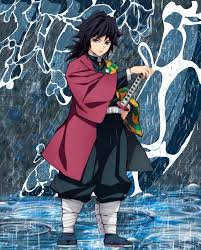

Giyu Tomioka é, sem dúvida, um personagem absurdamente "foda" no universo de Demon Slayer. Ele encarna a força silenciosa e a dedicação implacável de um verdadeiro Pilar. Como o Hashira da Água, Giyu é um mestre espadachim de elite, com habilidades de combate que beiram o sobrenatural. Sua técnica da Respiração da Água é fluida e letal, mas o que o eleva acima da maioria é a sua criação: a Décima Primeira Forma: Calmaria (Nagi). Essa técnica é um testemunho de seu gênio e poder, permitindo-lhe anular e desativar ataques com uma serenidade total, transformando o combate em uma dança de defesa impenetrável. Sua velocidade, força e reflexos são tão impressionantes que ele é capaz de enfrentar Luas Superiores, como Akaza, e forçá-los a reconhecer seu imenso talento. Além da pura força, Giyu é "foda" por sua profundidade e caráter. Apesar de sua postura estoica, reservada e, por vezes, socialmente desajeitada, ele possui um inabalável senso de justiça e compaixão. Foi ele quem, contra todas as regras do Corpo de Extermínio de Demônios, escolheu salvar Tanjiro e Nezuko logo no início da história, apostando nas raras chances de humanidade da garota. Ele estava disposto a arriscar a própria vida, junto a Urokodaki, por essa convicção. O peso de seu passado, marcado pela morte trágica de sua irmã e de seu amigo Sabito, confere a ele uma complexidade melancólica. Giyu carrega um sentimento de culpa e inferioridade, duvidando de sua dignidade como Hashira, o que paradoxalmente o torna ainda mais humano e inspirador em sua perseverança. Ele não luta por glória, mas por honrar a memória dos que se sacrificaram por ele. Em suma, Giyu Tomioka é um ícone de poder e retidão. Ele é o Hashira que silencia os demônios com a calma de um lago e a fúria de uma cachoeira, um guerreiro implacável que, mesmo envolto em sua solidão, demonstra ser um dos corações mais nobres e poderosos da Corporação. Ele é, de fato, um personagem incrivelmente foda.
